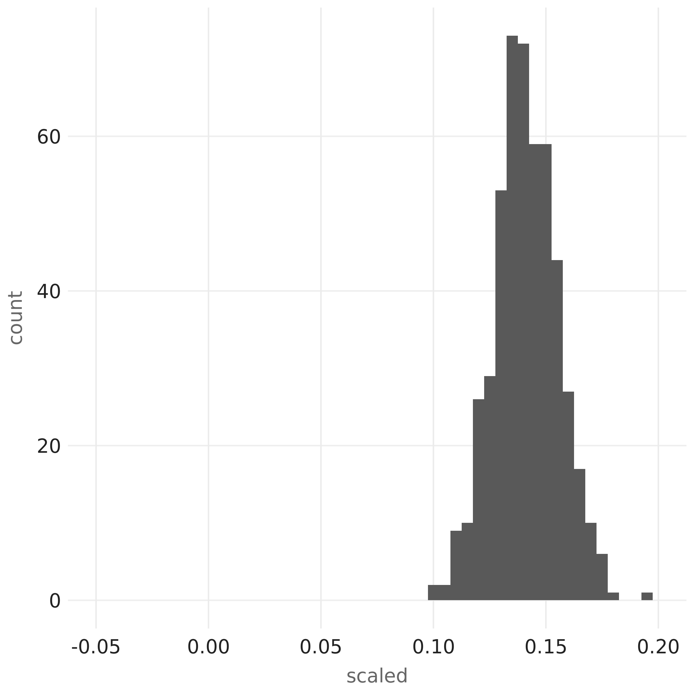

sparklyr 1.4 is now available on CRAN! To install sparklyr 1.4 from CRAN, run
install.packages("sparklyr")In this blog post, we will showcase the following much anticipated new functionalities from the sparklyr 1.4 release:
- Parallelized Weighted Sampling with Spark
- Support for Tidyr Verbs on Spark Dataframes
ft_robust_scaleras the R interface for RobustScaler from Spark 3.0- Option for enabling
RAPIDSGPU acceleration plugin inspark_connect() - Higher-order functions and
dplyr-related improvements
Parallelized Weighted Sampling
Readers familiar with dplyr::sample_n() and dplyr::sample_frac() functions may have noticed both of them support weighted-sampling use cases on R dataframes, e.g.,
dplyr::sample_n(mtcars, size = 3, weight = mpg, replace = FALSE)
mpg cyl disp hp drat wt qsec vs am gear carb
Fiat 128 32.4 4 78.7 66 4.08 2.200 19.47 1 1 4 1
Merc 280C 17.8 6 167.6 123 3.92 3.440 18.90 1 0 4 4
Mazda RX4 Wag 21.0 6 160.0 110 3.90 2.875 17.02 0 1 4 4and
dplyr::sample_frac(mtcars, size = 0.1, weight = mpg, replace = FALSE)
mpg cyl disp hp drat wt qsec vs am gear carb
Honda Civic 30.4 4 75.7 52 4.93 1.615 18.52 1 1 4 2
Merc 450SE 16.4 8 275.8 180 3.07 4.070 17.40 0 0 3 3
Fiat X1-9 27.3 4 79.0 66 4.08 1.935 18.90 1 1 4 1will select some random subset of mtcars using the mpg attribute as the sampling weight for each row. If replace = FALSE is set, then a row is removed from the sampling population once it gets selected, whereas when setting replace = TRUE, each row will always stay in the sampling population and can be selected multiple times.
Now the exact same use cases are supported for Spark dataframes in sparklyr 1.4! For example:
library(sparklyr)
sc <- spark_connect(master = "local")
mtcars_sdf <- copy_to(sc, mtcars, repartition = 4L)
dplyr::sample_n(mtcars_sdf, size = 5, weight = mpg, replace = FALSE)will return a random subset of size 5 from the Spark dataframe mtcars_sdf.
More importantly, the sampling algorithm being implemented in sparklyr 1.4 is something that fits perfectly into the MapReduce paradigm: as we have split our mtcars data into 4 partitions of mtcars_sdf by specifying repartition = 4L, the algorithm will first process each partition independently and in parallel, selecting a sample set of size up to 5 from each, and then reduce all 4 sample sets into a final sample set of size 5 by choosing records having the top 5 highest sampling priorities among all.
How is such parallelization possible, especially for the sampling without replacement scenario, where the desired result is defined as the outcome of a sequential process? A detailed answer to this question is in this blog post, which includes a definition of the problem (in particular, the exact meaning of sampling weights in term of probabilities), a high-level explanation of the current solution and the motivation behind it, and also, some mathematical details all hidden in one link to a PDF file, so that non-math-oriented readers can get the gist of everything else without getting scared away, while math-oriented readers enjoy working out all the integrals themselves before peeking at the answer.
Tidyr Verbs
The specialized implementations of the following tidyr verbs that work efficiently with Spark dataframes were included as part of sparklyr 1.4:
tidyr::filltidyr::nesttidyr::unnesttidyr::pivot_widertidyr::pivot_longertidyr::separatetidyr::unite
We can demonstrate how those verbs are useful for tidying data through some examples.
Let’s say we are given mtcars_sdf, a Spark dataframe containing all rows from mtcars plus the name of each row:
library(sparklyr)
sc <- spark_connect(master = "local")
mtcars_sdf <- cbind(
data.frame(model = rownames(mtcars)),
data.frame(mtcars, row.names = NULL)
) %>%
copy_to(sc, ., repartition = 4L)
print(mtcars_sdf, n = 5)
# Source: spark<?> [?? x 12]
model mpg cyl disp hp drat wt qsec vs am gear carb
<chr> <dbl> <dbl> <dbl> <dbl> <dbl> <dbl> <dbl> <dbl> <dbl> <dbl> <dbl>
1 Mazda RX4 21 6 160 110 3.9 2.62 16.5 0 1 4 4
2 Mazda RX4 W… 21 6 160 110 3.9 2.88 17.0 0 1 4 4
3 Datsun 710 22.8 4 108 93 3.85 2.32 18.6 1 1 4 1
4 Hornet 4 Dr… 21.4 6 258 110 3.08 3.22 19.4 1 0 3 1
5 Hornet Spor… 18.7 8 360 175 3.15 3.44 17.0 0 0 3 2
# … with more rowsand we would like to turn all numeric attributes in mtcar_sdf (in other words, all columns other than the model column) into key-value pairs stored in 2 columns, with the key column storing the name of each attribute, and the value column storing each attribute’s numeric value. One way to accomplish that with tidyr is by utilizing the tidyr::pivot_longer functionality:
mtcars_kv_sdf <- mtcars_sdf %>%
tidyr::pivot_longer(cols = -model, names_to = "key", values_to = "value")
print(mtcars_kv_sdf, n = 5)
# Source: spark<?> [?? x 3]
model key value
<chr> <chr> <dbl>
1 Mazda RX4 am 1
2 Mazda RX4 carb 4
3 Mazda RX4 cyl 6
4 Mazda RX4 disp 160
5 Mazda RX4 drat 3.9
# … with more rowsTo undo the effect of tidyr::pivot_longer, we can apply tidyr::pivot_wider to our mtcars_kv_sdf Spark dataframe, and get back the original data that was present in mtcars_sdf:
tbl <- mtcars_kv_sdf %>%
tidyr::pivot_wider(names_from = key, values_from = value)
print(tbl, n = 5)
# Source: spark<?> [?? x 12]
model carb cyl drat hp mpg vs wt am disp gear qsec
<chr> <dbl> <dbl> <dbl> <dbl> <dbl> <dbl> <dbl> <dbl> <dbl> <dbl> <dbl>
1 Mazda RX4 4 6 3.9 110 21 0 2.62 1 160 4 16.5
2 Hornet 4 Dr… 1 6 3.08 110 21.4 1 3.22 0 258 3 19.4
3 Hornet Spor… 2 8 3.15 175 18.7 0 3.44 0 360 3 17.0
4 Merc 280C 4 6 3.92 123 17.8 1 3.44 0 168. 4 18.9
5 Merc 450SLC 3 8 3.07 180 15.2 0 3.78 0 276. 3 18
# … with more rowsAnother way to reduce many columns into fewer ones is by using tidyr::nest to move some columns into nested tables. For instance, we can create a nested table perf encapsulating all performance-related attributes from mtcars (namely, hp, mpg, disp, and qsec). However, unlike R dataframes, Spark Dataframes do not have the concept of nested tables, and the closest to nested tables we can get is a perf column containing named structs with hp, mpg, disp, and qsec attributes:
mtcars_nested_sdf <- mtcars_sdf %>%
tidyr::nest(perf = c(hp, mpg, disp, qsec))We can then inspect the type of perf column in mtcars_nested_sdf:
sdf_schema(mtcars_nested_sdf)$perf$type
[1] "ArrayType(StructType(StructField(hp,DoubleType,true), StructField(mpg,DoubleType,true), StructField(disp,DoubleType,true), StructField(qsec,DoubleType,true)),true)"and inspect individual struct elements within perf:
perf <- mtcars_nested_sdf %>% dplyr::pull(perf)
unlist(perf[[1]])
hp mpg disp qsec
110.00 21.00 160.00 16.46Finally, we can also use tidyr::unnest to undo the effects of tidyr::nest:
mtcars_unnested_sdf <- mtcars_nested_sdf %>%
tidyr::unnest(col = perf)
print(mtcars_unnested_sdf, n = 5)
# Source: spark<?> [?? x 12]
model cyl drat wt vs am gear carb hp mpg disp qsec
<chr> <dbl> <dbl> <dbl> <dbl> <dbl> <dbl> <dbl> <dbl> <dbl> <dbl> <dbl>
1 Mazda RX4 6 3.9 2.62 0 1 4 4 110 21 160 16.5
2 Hornet 4 Dr… 6 3.08 3.22 1 0 3 1 110 21.4 258 19.4
3 Duster 360 8 3.21 3.57 0 0 3 4 245 14.3 360 15.8
4 Merc 280 6 3.92 3.44 1 0 4 4 123 19.2 168. 18.3
5 Lincoln Con… 8 3 5.42 0 0 3 4 215 10.4 460 17.8
# … with more rowsRobust Scaler
RobustScaler is a new functionality introduced in Spark 3.0 (SPARK-28399). Thanks to a pull request by @zero323, an R interface for RobustScaler, namely, the ft_robust_scaler() function, is now part of sparklyr.
It is often observed that many machine learning algorithms perform better on numeric inputs that are standardized. Many of us have learned in stats 101 that given a random variable \(X\), we can compute its mean \(\mu = E[X]\), standard deviation \(\sigma = \sqrt{E[X^2] - (E[X])^2}\), and then obtain a standard score \(z = \frac{X - \mu}{\sigma}\) which has mean of 0 and standard deviation of 1.
However, notice both \(E[X]\) and \(E[X^2]\) from above are quantities that can be easily skewed by extreme outliers in \(X\), causing distortions in \(z\).
An alternative way of standardizing \(X\) based on its median, 1st quartile, and 3rd quartile values, all of which are robust against outliers, would be the following:
\(\displaystyle z = \frac{X - \text{Median}(X)}{\text{P75}(X) - \text{P25}(X)}\)
and this is precisely what RobustScaler offers.
To see ft_robust_scaler() in action and demonstrate its usefulness, we can go through a contrived example consisting of the following steps:
- Draw 100 random samples from the standard normal distribution
sample_values <- rnorm(100)
print(sample_values)
[1] -0.885440337 0.831855863 -0.890427366 0.437780168 0.091902152
[6] 0.774895164 -0.839350781 -1.173025189 -0.442174680 -0.002573251
...- Inspect the minimal and maximal values among the 100 random samples:
print(min(sample_values))
[1] -2.377851
print(max(sample_values))
[1] 2.629998- Now create 5 other values that are extreme outliers compared to the 100 random samples above. Given that we know all 100 samples are within the range of \((-3, 3)\), we can choose \(21, 22, \ldots, 25\) as our outliers:
outliers <- 20 + seq(5)- Copy all 105 values into a Spark dataframe named
sdf
library(sparklyr)
sc <- spark_connect(master = "local", version = "3.0.0")
sdf <- copy_to(sc, data.frame(value = c(sample_values, outliers)))- We can then apply
ft_robust_scaler()to obtain the standardized value for each input:
scaled <- sdf %>%
ft_vector_assembler("value", "input") %>%
ft_robust_scaler("input", "scaled") %>%
dplyr::pull(scaled) %>%
unlist()- Plotting the result shows the non-outlier data points are scaled to values that still more or less form a bell-shaped distribution, as expected, so the scaling is robust against influences of the outliers:
library(ggplot2)
ggplot(data.frame(scaled = scaled), aes(x = scaled)) + geom_histogram(binwidth = 0.2)
- Finally, we can compare the distribution of the scaled values above with the distribution of z-scores of all input values, and notice how scaling the input with only mean and standard deviation would have caused noticeable skewness which the robust scaler has successfully avoided:
all_values <- c(sample_values, outliers)
z_scores <- (all_values - mean(all_values)) / sd(all_values)
ggplot(data.frame(scaled = z_scores), aes(x = scaled)) + geom_histogram(binwidth = 0.2)
RAPIDS
Readers following Apache Spark releases closely probably have noticed the recent addition of RAPIDS GPU acceleration support in Spark 3.0. Catching up with this recent development, an option to enable RAPIDS in Spark connections was also created in sparklyr and shipped in sparklyr 1.4. On a host with RAPIDS-capable hardware (e.g., an Amazon EC2 instance of type ‘p3.2xlarge’), one can install sparklyr 1.4 and observe RAPIDS hardware acceleration being reflected in Spark SQL physical query plans:
library(sparklyr)
sc <- spark_connect(master = "local", version = "3.0.0", packages = "rapids")
dplyr::db_explain(sc, "SELECT 4")
== Physical Plan ==
*(2) GpuColumnarToRow false
+- GpuProject [4 AS 4#45]
+- GpuRowToColumnar TargetSize(2147483647)
+- *(1) Scan OneRowRelation[]Higher-Order Functions and dplyr-Related Improvements
All newly introduced higher-order functions from Spark 3.0, such as array_sort() with custom comparator, transform_keys(), transform_values(), and map_zip_with(), are supported by sparklyr 1.4.
In addition, all higher-order functions can now be accessed directly through dplyr rather than their hof_* counterparts in sparklyr, which means, for example, we can run the following dplyr queries to calculate the square of all array elements in column x of sdf and then sort them in descending order:
library(sparklyr)
sc <- spark_connect(master = "local", version = "3.0.0")
sdf <- copy_to(sc, tibble::tibble(x = list(c(-3, -2, 1, 5), c(6, -7, 5, 8))))
sq_desc <- sdf %>%
dplyr::mutate(x = transform(x, ~ .x * .x)) %>%
dplyr::mutate(x = array_sort(x, ~ as.integer(sign(.y - .x)))) %>%
dplyr::pull(x)
print(sq_desc)
[[1]]
[1] 25 9 4 1
[[2]]
[1] 64 49 36 25Acknowledgement
In chronological order, we would like to thank the following individuals for their contribution towards sparklyr 1.4:
We also appreciate bug reports, feature requests, and valuable other feedback about sparklyr from our awesome open-source community (e.g., the weighted sampling feature in sparklyr 1.4 was largely motivated by this Github issue filed by @ajing, and some dplyr-related bug fixes shipped in this release was initiated in #2648 and completed with this pull request by @wkdavis).
Last but not least, the author of this blog post is extremely grateful for fantastic editorial suggestions from @javierluraschi, @batpigandme, and @skeydan.
If you wish to learn more about sparklyr, we recommend checking out sparklyr.ai, spark.rstudio.com, and also some of the previous release posts such as sparklyr 1.3 and sparklyr 1.2.
Thanks for reading!